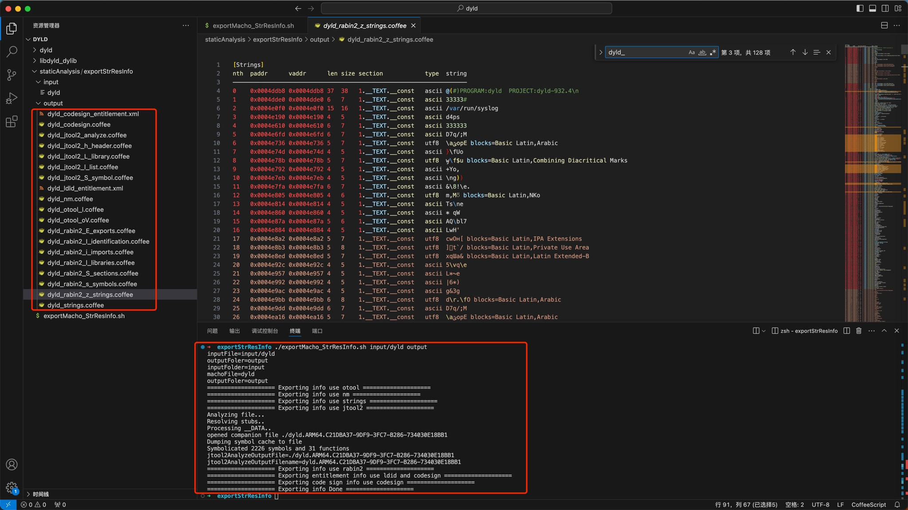

通用成套做法
- 典型的成套的做法 =
nm+strings+otool+jtool2+rabin2+ldid2/codesign
自动处理
用下面的自动化脚本，一键自动处理：
exportMacho_StrResInfo.sh
#!/bin/bash
# Function: Export/Extract single Mach-O file string and resources related info
# Author: Crifan Li
# Update: 20241015
# Refer:
# /Users/crifan/dev/dev_root/androidReverse/CloudPhone/Douyin/dy297/soLibs/common/exportElf_StrResInfo.sh
# https://book.crifan.org/books/ios_re_static_analysis/website/analysis_examples/bin_info_exp_str.html
# Usage:
# chmod +x exportMacho_StrResInfo.sh
# ./exportMacho_StrResInfo.sh input/dyld output
# SEPERATOR="--------------------"
SEPERATOR="===================="
# outpuFileSuffix="txt"
outpuFileSuffix="coffee"
function log() {
echo "${SEPERATOR} $1 ${SEPERATOR}"
}
function extractInputFolder(){
curInputFile=$1
# echo "curInputFile=${curInputFile}"
retInputFolder="$(dirname "${curInputFile}")"
# echo "retInputFolder=${retInputFolder}"
# return retInputFolder
# return $retInputFolder
# echo ${retInputFolder}
echo $retInputFolder
}
function extractFilenameNoSuffix(){
curInputFile=$1
# echo "curInputFile=${curInputFile}"
filenameWithSuffix="$(basename "${inputFile}")"
# echo "filenameWithSuffix=${filenameWithSuffix}"
filenameNoSuffix=${filenameWithSuffix%.*}
# echo "filenameNoSuffix=${filenameNoSuffix}"
echo ${filenameNoSuffix}
}
function initOutputFolerFromInputFolder(){
inputFolder=$1
# echo "inputFolder=${inputFolder}"
outputFoler=$2
# echo "outputFoler=${outputFoler}"
if [ -z "$outputFoler" ]
then
if [ -z "$inputFolder" ]
then
outputFoler="."
else
outputFoler=${inputFolder}
fi
# echo "outputFoler=${outputFoler}"
echo ${outputFoler}
else
echo ${outputFoler}
fi
}
inputFile=$1
echo "inputFile=${inputFile}"
outputFoler=$2
echo "outputFoler=${outputFoler}"
# inputFolder="$(dirname "${inputFile}")"
inputFolder=$(extractInputFolder $inputFile)
echo "inputFolder=${inputFolder}"
machoFile=$(extractFilenameNoSuffix $inputFile)
echo "machoFile=${machoFile}"
# if [ -z "$outputFoler" ]
# then
# if [ -z "$inputFolder" ]
# then
# outputFoler="."
# else
# outputFoler=${inputFolder}
# fi
# echo "outputFoler=${outputFoler}"
# fi
outputFoler=$(initOutputFolerFromInputFolder $inputFolder $outputFoler)
echo "outputFoler=${outputFoler}"
log "Exporting info use nm"
nm ${inputFile} > ${outputFoler}/${machoFile}_nm.${outpuFileSuffix}
log "Exporting info use strings"
strings ${inputFile} > ${outputFoler}/${machoFile}_strings.${outpuFileSuffix}
log "Exporting info use otool"
otool -l ${inputFile} > ${outputFoler}/${machoFile}_otool_l.${outpuFileSuffix}
otool -oV ${inputFile} > ${outputFoler}/${machoFile}_otool_oV.${outpuFileSuffix}
log "Exporting info use jtool2"
export ARCH=arm64
jtool2 ${inputFile} > ${outputFoler}/${machoFile}_strings.${outpuFileSuffix}
jtool2 -h ${inputFile} > ${outputFoler}/${machoFile}_jtool2_h_header.${outpuFileSuffix}
jtool2 -l ${inputFile} > ${outputFoler}/${machoFile}_jtool2_l_list.${outpuFileSuffix}
jtool2 -L ${inputFile} > ${outputFoler}/${machoFile}_jtool2_L_library.${outpuFileSuffix}
jtool2 -S ${inputFile} > ${outputFoler}/${machoFile}_jtool2_S_symbol.${outpuFileSuffix}
jtool2 --analyze ${inputFile}
# outpu: dyld.ARM64.C21DBA37-9DF9-3FC7-B286-734030E18BB1
findNameRegex=${machoFile}.*.*
# jtool2AnalyzeOutputFile="$(find . -maxdepth 1 -name ${findNameRegex} -printf 1 -quit)"
# jtool2AnalyzeOutputFile=$(find . -maxdepth 1 -name ${findNameRegex} -printf 1 -quit)
# jtool2AnalyzeOutputFile=$(find . -maxdepth 1 -name ${findNameRegex})
# jtool2AnalyzeOutputFile=$(find . -maxdepth 1 -name 'dyld.*')
# jtool2AnalyzeOutputFile=$(find . -maxdepth 1 -name ${findNameRegex} -printf 1)
# jtool2AnalyzeOutputFile=$(find . -name ${findNameRegex})
jtool2AnalyzeOutputFile=$(find . -maxdepth 1 -name ${findNameRegex})
echo "jtool2AnalyzeOutputFile=${jtool2AnalyzeOutputFile}" # jtool2AnalyzeOutputFile=./dyld.ARM64.C21DBA37-9DF9-3FC7-B286-734030E18BB1
jtool2AnalyzeOutputFilename="$(basename "${jtool2AnalyzeOutputFile}")"
echo "jtool2AnalyzeOutputFilename=${jtool2AnalyzeOutputFilename}" # jtool2AnalyzeOutputFilename=dyld.ARM64.C21DBA37-9DF9-3FC7-B286-734030E18BB1
mv ${jtool2AnalyzeOutputFilename} ${outputFoler}/${machoFile}_jtool2_analyze.${outpuFileSuffix}
log "Exporting info use rabin2"
rabin2 -I ${inputFile} > ${outputFoler}/${machoFile}_rabin2_I_identification.${outpuFileSuffix}
rabin2 -i ${inputFile} > ${outputFoler}/${machoFile}_rabin2_i_imports.${outpuFileSuffix}
rabin2 -E ${inputFile} > ${outputFoler}/${machoFile}_rabin2_E_exports.${outpuFileSuffix}
rabin2 -l ${inputFile} > ${outputFoler}/${machoFile}_rabin2_l_libraries.${outpuFileSuffix}
rabin2 -z ${inputFile} > ${outputFoler}/${machoFile}_rabin2_z_strings.${outpuFileSuffix}
rabin2 -s ${inputFile} > ${outputFoler}/${machoFile}_rabin2_s_symbols.${outpuFileSuffix}
rabin2 -S ${inputFile} > ${outputFoler}/${machoFile}_rabin2_S_sections.${outpuFileSuffix}
log "Exporting entitlement info use ldid and codesign"
# export entitlements
ldid2 -e ${inputFile} > ${outputFoler}/${machoFile}_ldld_entitlement.xml
codesign -d --entitlements - ${inputFile} &> ${outputFoler}/${machoFile}_codesign_entitlement.xml
log "Exporting code sign info use codesign"
# export code sign info
# for binary
codesign -vv -d ${inputFile} &> ${outputFoler}/${machoFile}_codesign.${outpuFileSuffix}
# # for app
# codesign -vv -d xxx.App > iOSApp_codesign.txt
log "Exporting info Done"
运行方式：
- 添加可执行权限
chmod +x exportMacho_StrResInfo.sh
- 运行：输入文件的传入Mach-O二进制和（可选）输出目录
./exportMacho_StrResInfo.sh <inputMachoFile> <outputFolder>- 举例
./exportMacho_StrResInfo.sh input/dyld output- 
- 举例
手动处理
手动一行行的，单独分批去运行下面的命令，去导出Mach-O的字符串资源等信息：
nm iOSBinaryFile > iOSBinaryFile_nm.txt
strings iOSBinaryFile > iOSBinaryFile_strings.txt
otool -l iOSBinaryFile > iOSBinaryFile_otool_l.txt
otool -oV iOSBinaryFile > iOSBinaryFile_otool_oV.txt
jtool2 -h iOSBinaryFile > iOSBinaryFile_jtool2_h_header.txt
jtool2 -l iOSBinaryFile > iOSBinaryFile_jtool2_l_list.txt
jtool2 -L iOSBinaryFile > iOSBinaryFile_jtool2_L_library.txt
jtool2 -S iOSBinaryFile > iOSBinaryFile_jtool2_S_symbol.txt
jtool2 --analyze iOSBinaryFile
mv iOSBinaryFile.ARM64.xxx-xxx-xxx-xxx-xxx iOSBinaryFile_jtool2_analyze.txt
rabin2 -I iOSBinaryFile > iOSBinaryFile_rabin2_I_identification.txt
rabin2 -i iOSBinaryFile > iOSBinaryFile_rabin2_i_imports.txt
rabin2 -E iOSBinaryFile > iOSBinaryFile_rabin2_E_exports.txt
rabin2 -l iOSBinaryFile > iOSBinaryFile_rabin2_l_libraries.txt
rabin2 -z iOSBinaryFile > iOSBinaryFile_rabin2_z_strings.txt
rabin2 -s iOSBinaryFile > iOSBinaryFile_rabin2_s_symbols.txt
rabin2 -S iOSBinaryFile > iOSBinaryFile_rabin2_S_sections.txt
# export entitlements
codesign -d --entitlements - iOSBinaryFile > iOSBinaryFile_codesign_entitlement.xml
# or
# ldid -e iOSBinaryFile > iOSBinaryFile_ldld_entitlement.xml
# ldid2 -e iOSBinaryFile > iOSBinaryFile_ldld_entitlement.xml
# export code sign info
# for binary
codesign -vv -d iOSBinaryFile > iOSBinaryFile_codesign.txt
# for app
codesign -vv -d xxx.App > iOSApp_codesign.txt
- 说明
- 把
iOSBinaryFile换成实际的Mach-O二进制文件名
- 把
- 特殊
- 如果二进制是
FAT格式=胖二进制，那么对于jtool2，要指定架构才能继续export ARCH=arm64 jtool2 -h iOSBinaryFile > iOSBinaryFile_jtool2_h_header.txt
- 如果二进制是